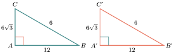
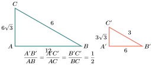
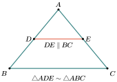
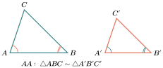
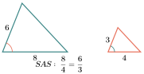
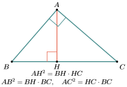
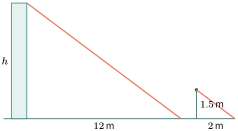

វត្ថុបំណង
- ស្គាល់លក្ខណៈនៃត្រីកោណពីរដូចគ្នា
- ប្រើករណីដំនូចដើម្បីរកប្រវែងជ្រុងនិងមុំនៃត្រីកោណ
- បកស្រាយទំនាក់ទំនងមាត្រដ្ឋានក្នុងត្រីកោណកែង ។
1. ត្រីកោណដូចគ្នា
1.1. សញ្ញាណ
ឧទាហរណ៍ទី 1 : កាលណាគេយកជារូបត្រីកោណ \(\displaystyle ABC\) ទៅថតចម្លងដោយមិនពង្រីកនិងមិនបង្រួម នោះគេបានត្រីកោណ \(\displaystyle A'B'C'\) ប៉ុននិងត្រីកោណដើម \(\displaystyle ABC\) ។ មានន័យថាវាមានមុំបីប៉ុនគ្នារៀងគ្នានិងជ្រុងបីប៉ុនគ្នារៀងគ្នា ។

ឧទាហរណ៍ទី 2 : បើគេយករូបត្រីកោណ \(\displaystyle ABC\) ទៅថតចម្លងដោយបង្រួម \(\displaystyle 50\%\) នោះគេសង្កេតឃើញថា មុំនៅរក្សារង្វាស់ដដែលគឺ \(\displaystyle \angle A = \angle A' = 60^\circ\) , \(\displaystyle \angle B = \angle B' = 30^\circ\) , \(\displaystyle \angle C = \angle C' = 90^\circ\) ហើយរង្វាស់ជ្រុងថយអស់ពាក់កណ្ដាលគឺ \(\displaystyle A'C' = 6\) , \(\displaystyle A'B' = 3\) និង \(\displaystyle B'C' = 3\sqrt{3}\) ។ គេថាត្រីកោណចម្លង \(\displaystyle A'B'C'\) ដូចគ្នានិងត្រីកោណដើម \(\displaystyle ABC\) ។

ឧទាហរណ៍ទី 3 : គេមាន \(\displaystyle A'B'C'\) ជាត្រីកោណដែលបានបង្រួមតូច \(\displaystyle 50\%\) ពីត្រីកោណដើម \(\displaystyle ABC\) នោះគេបាន \(\displaystyle \angle A = \angle A'\) , \(\displaystyle \angle B = \angle B'\) , \(\displaystyle \angle C = \angle C'\) , \(\displaystyle AC = 2A'C'\) , \(\displaystyle AB = 2A'B'\) និង \(\displaystyle BC = 2B'C'\) ។
គេអាចសរសេរជាផលធៀប \(\displaystyle \frac{A'B'}{AB} = \frac{A'C'}{AC} = \frac{B'C'}{BC} = \frac{1}{2}\) គេថាត្រីកោណ \(\displaystyle A'B'C'\) និង \(\displaystyle ABC\) ជាត្រីកោណដូចគ្នាដែលមានផលធៀបដំនូចស្មើនឹង \(\displaystyle \frac{1}{2}\) ។
និយមន័យ : ត្រីកោណពីរជាត្រីកោណដូចគ្នាកាលណាវាមាន
ចំណាំ :
- គេកំណត់ត្រីកោណពីរដូចគ្នាដោយសញ្ញា \(\displaystyle \Delta ABC \sim \Delta A'B'C'\) ។
បើ \(\displaystyle ABC\) និង \(\displaystyle A'B'C'\) ជាត្រីកោណដូចគ្នាតាមផលធៀបដំនូច គេសរសេរផលធៀបសមាមាត្រនៃជ្រុងទាំងបីដោយរៀបកំពូលទៅតាមលំដាប់នៃមុំប៉ុនគ្នា ។
\[\Delta A'B'C' \sim \Delta ABC \Rightarrow \frac{A'B'}{AB} = \frac{A'C'}{AC} = \frac{B'C'}{BC} = k\]
លំហាត់គំរូ : ក្នុងត្រីកោណ \(\displaystyle ABC\) មានចំណុច \(\displaystyle D\) និង \(\displaystyle E\) ជាចំណុចកណ្ដាលរៀងគ្នានៃជ្រុង \(\displaystyle AB\) និង \(\displaystyle AC\) ដែល \(\displaystyle DE \parallel BC\) ។ ចូរបង្ហាញថា \(\displaystyle ADE\) និង \(\displaystyle ABC\) ជាត្រីកោណដូចគ្នា ។

ចម្លើយ : បង្ហាញថា \(\displaystyle ADE\) និង \(\displaystyle ABC\) ជាត្រីកោណដូចគ្នា ដោយ \(\displaystyle DE \parallel BC\) (សម្មតិកម្ម) យើងបាន \(\displaystyle \angle D = \angle B\) (មុំត្រូវគ្នា) \(\displaystyle \angle E = \angle C\) (មុំត្រូវគ្នា) \(\displaystyle \angle A\) (មុំរួមនៃត្រីកោណទាំងពីរ) ។ តាមទ្រឹស្តីបទតាលែសគេបាន
ត្រីកោណ \(\displaystyle ADE\) និង \(\displaystyle ABC\) មានមុំបីប៉ុនគ្នារៀងគ្នា ហើយជ្រុងទាំងបីសមាមាត្ររៀងគ្នាជាត្រីកោណដូចគ្នា ។ ដូចនេះ \(\displaystyle \Delta ADE \sim \Delta ABC\) ។
ប្រតិបត្តិ : ត្រីកោណ \(\displaystyle ABC\) និង \(\displaystyle A'B'C'\) ជាត្រីកោណដូចគ្នាដែលមានផលធៀបដំនូចស្មើនឹង \(\displaystyle \frac{1}{4}\) ។ ចូរគណនា \(\displaystyle x, y, z\) ។
1.2. ករណីដំនូច
ដើម្បីឱ្យត្រីកោណពីរដូចគ្នា គេគ្រាន់តែរកឱ្យឃើញមុំខ្លះៗប៉ុនគ្នា ឬជ្រុងទាំងបីសមាមាត្ររៀងគ្នាតាមករណីដូចខាងក្រោម ។
ក. ករណីដំនូចទី 1

គេឱ្យត្រីកោណ \(\displaystyle ABC\) និង \(\displaystyle A'B'C'\) ដែល \(\displaystyle \angle A = \angle A'\) និង \(\displaystyle \angle B = \angle B'\) ។ បង្ហាញថា \(\displaystyle \Delta ABC \sim \Delta A'B'C'\) ។ នៅលើ \(\displaystyle [AB]\) ដៅចំណុច \(\displaystyle D\) ដែល \(\displaystyle AD = A'B'\) រួចគូស \(\displaystyle (DE) \parallel (BC)\) គេបាន \(\displaystyle \Delta ABC \sim \Delta ADE\) តែ \(\displaystyle \Delta ADE \cong \Delta A'B'C'\) (តាមករណីប៉ុនគ្នា ម.ជ.ម) ។ ដូចនេះ \(\displaystyle \Delta ABC \sim \Delta A'B'C'\) ។ ករណីដំនូច ម.ម
ជារួម : ត្រីកោណពីរជាត្រីកោណដូចគ្នា កាលណាវាមានមុំពីរគូប៉ុនគ្នារៀងគ្នា ។
ចំណាំ : បើ \(\displaystyle \Delta ABC \sim \Delta A'B'C'\) គេអាចទាញបាន វិបាក គឺ
| សម្មតិកម្ម | សន្និដ្ឋាន | វិបាក |
| \(\displaystyle \angle A = \angle A'\) | \(\displaystyle \angle C = \angle C'\) | |
| \(\displaystyle \angle B = \angle B'\) | \(\displaystyle \Delta ABC \sim \Delta A'B'C'\) | \(\displaystyle \frac{AB}{A'B'} = \frac{AC}{A'C'} = \frac{BC}{B'C'}\) |
លំហាត់គំរូទី 1 : គេមាន \(\displaystyle \Delta ABC\) និង \(\displaystyle \Delta DEF\) ដែល \(\displaystyle \angle A = 45^\circ\) , \(\displaystyle \angle B = 64^\circ\) , \(\displaystyle \angle D = 45^\circ\) , \(\displaystyle \angle E = 71^\circ\) ។ ចូរបង្ហាញថា \(\displaystyle \Delta ABC\) និង \(\displaystyle \Delta DFE\) ជាត្រីកោណដូចគ្នា ។
ចម្លើយ : បង្ហាញថា \(\displaystyle \Delta ABC \sim \Delta DFE\) ត្រីកោណ \(\displaystyle ABC\) មាន \(\displaystyle \angle C = 180^\circ - (64^\circ + 45^\circ)\) \(\displaystyle = 180^\circ - 109^\circ = 71^\circ\) ត្រីកោណ \(\displaystyle ABC\) និងត្រីកោណ \(\displaystyle DFE\) មាន \(\displaystyle \angle A = \angle D = 45^\circ\) \(\displaystyle \angle C = \angle E = 71^\circ\) នាំឱ្យ \(\displaystyle \Delta ABC \sim \Delta DFE\) (តាមករណីដំនូច ម.ម) ។ ដូចនេះ \(\displaystyle \Delta ABC \sim \Delta DFE\) ។
លំហាត់គំរូទី 2 : គេឱ្យ \(\displaystyle \angle S = 37^\circ\) , \(\displaystyle \angle R = \angle K = 58^\circ\) និង \(\displaystyle SR = 72\text{m}\) , \(\displaystyle SK = 168\text{m}\) , \(\displaystyle TR = 54\text{m}\) ។ ក. ចូរបង្ហាញថាត្រីកោណ \(\displaystyle SPK\) ដូចត្រីកោណ \(\displaystyle STR\) ។ ខ. ចូររកប្រវែង \(\displaystyle PK\) ។
ចម្លើយ : ក. បង្ហាញថាត្រីកោណ \(\displaystyle SPK\) ដូចត្រីកោណ \(\displaystyle STR\) ត្រីកោណ \(\displaystyle SPK\) និង \(\displaystyle STR\) មាន \(\displaystyle \angle RST = \angle PSK = 37^\circ\) (មុំទល់កំពូល) \(\displaystyle \angle R = \angle K = 58^\circ\) (សម្មតិកម្ម) នាំឱ្យត្រីកោណ \(\displaystyle SPK\) ដូចត្រីកោណ \(\displaystyle STR\) (តាមករណីដំនូចទី 1) ។ ដូចនេះ \(\displaystyle \Delta SPK \sim \Delta STR\) ។
ខ. រកប្រវែង \(\displaystyle PK\) ត្រីកោណ \(\displaystyle \Delta SPK \sim \Delta STR\) \(\displaystyle \Rightarrow \frac{PK}{TR} = \frac{SK}{SR}\) ដោយ \(\displaystyle SR = 72\) , \(\displaystyle SK = 168\) , \(\displaystyle TR = 54\) \(\displaystyle \frac{PK}{54} = \frac{168}{72}\) \(\displaystyle PK = \frac{168 \times 54}{72}\) \(\displaystyle = \frac{9072}{72}\) \(\displaystyle = 126\) ដូចនេះ ប្រវែង \(\displaystyle PK = 126\text{m}\) ។
ប្រតិបត្តិ : គេមានត្រីកោណ \(\displaystyle ABC\) និងត្រីកោណ \(\displaystyle PMN\) ដែល \(\displaystyle \angle A = 80^\circ\) , \(\displaystyle \angle B = 54^\circ\) , \(\displaystyle \angle P = 54^\circ\) និង \(\displaystyle \angle M = 46^\circ\) ។ ក. ចូរបង្ហាញថាត្រីកោណ \(\displaystyle ABC\) ដូចត្រីកោណ \(\displaystyle PMN\) ។ ខ. ចូរទាញរកផលធៀបដំនូច ។
ខ. ករណីដំនូចទី 2
គេមានត្រីកោណ \(\displaystyle ABC\) និងត្រីកោណ \(\displaystyle A'B'C'\) ។ បើយើងយកត្រីកោណ \(\displaystyle A'B'C'\) មកដាក់លើត្រីកោណ \(\displaystyle ABC\) នោះយើងបានចំណុច \(\displaystyle A\) ត្រួតលើ \(\displaystyle A'\) , \(\displaystyle B'\) ត្រួតលើចំណុច \(\displaystyle D\) នៅលើជ្រុង \(\displaystyle AB\) និង \(\displaystyle C'\) ត្រួតលើចំណុច \(\displaystyle E\) នៅលើជ្រុង \(\displaystyle AC\) ។

ដែល \(\displaystyle \angle A = \angle A'\) និង \(\displaystyle \frac{AB}{A'B'} = \frac{AC}{A'C'}\) បង្ហាញថា \(\displaystyle \Delta ABC \sim \Delta A'B'C'\) ។ បើ \(\displaystyle D \in AB\) ដែល \(\displaystyle AD = A'B'\) រួចគូសអង្កត់ \(\displaystyle DE \parallel BC\) ។ គេបាន \(\displaystyle \Delta ABC \sim \Delta ADE \quad (1)\) តាមទ្រឹស្តីបទតាលែសក្នុងត្រីកោណ \(\displaystyle ABC\) គេបាន \(\displaystyle \frac{AB}{AD} = \frac{AC}{AE}\) ឬ \(\displaystyle \frac{AB}{A'B'} = \frac{AC}{AE} \quad (AD = A'B')\) ។ តាមសម្មតិកម្ម \(\displaystyle \frac{AB}{A'B'} = \frac{AC}{A'C'}\) គេបាន \(\displaystyle \frac{AC}{AE} = \frac{AC}{A'C'}\) នាំឱ្យ \(\displaystyle AE = A'C'\) ។ តែ \(\displaystyle \Delta ADE \cong \Delta A'B'C'\) ដូចនេះ \(\displaystyle \Delta ABC \sim \Delta A'B'C'\) ។
ជារួម : ត្រីកោណពីរជាត្រីកោណដូចគ្នា កាលណាវាមានមុំមួយប៉ុនគ្នារៀងគ្នាអមដោយជ្រុងពីរសមាមាត្ររៀងគ្នា ។
ចំណាំ : បើ \(\displaystyle \Delta ABC \sim \Delta A'B'C'\) គេអាចទាញបានវិបាកគឺ
| សម្មតិកម្ម | សន្និដ្ឋាន | វិបាក |
| \(\displaystyle \angle A = \angle A'\) | \(\displaystyle \angle B = \angle B'\) , \(\displaystyle \angle C = \angle C'\) | |
| \(\displaystyle \frac{AB}{A'B'} = \frac{AC}{A'C'} = k\) | \(\displaystyle \Delta ABC \sim \Delta A'B'C'\) | \(\displaystyle \frac{BC}{B'C'} = k\) |
លំហាត់គំរូទី 1 : គេមានបន្ទាត់ \(\displaystyle PH\) និង \(\displaystyle FM\) កែងគ្នាត្រង់ \(\displaystyle H\) ដែល \(\displaystyle FH = 2HM\) និងចំណុច \(\displaystyle N\) កណ្ដាលនៃ \(\displaystyle PH\) ។ ចូរបង្ហាញបញ្ជាក់ថា \(\displaystyle \Delta PHF \sim \Delta NHM\) ។
ចម្លើយ : ស្រាយបញ្ជាក់ថា \(\displaystyle \Delta PHF \sim \Delta NHM\) ។ ត្រីកោណទាំងពីរមានមុំមួយស្មើនឹង \(\displaystyle 90^\circ\) គេបាន \(\displaystyle PH \perp FM\) (សម្មតិកម្ម) ម្យ៉ាងទៀត \(\displaystyle FH = 2HM\) នាំឱ្យ \(\displaystyle \frac{HM}{HF} = \frac{1}{2} \quad (1)\) ដោយ \(\displaystyle N\) ជាចំណុចកណ្ដាល \(\displaystyle PH\) យើងបាន \(\displaystyle \frac{NH}{PH} = \frac{1}{2} \quad (2)\) តាមទំនាក់ទំនង (1) និង (2) យើងបាន \(\displaystyle \frac{HM}{HF} = \frac{NH}{PH} = \frac{1}{2}\) ។ ដូចនេះ \(\displaystyle \Delta PHF \sim \Delta NHM\) (ករណីដំនូច ជ.ម.ជ) ។
លំហាត់គំរូទី 2 : គេមាន \(\displaystyle \Delta ABC \sim \Delta AEF\) (តាមរូបខាងស្តាំ) ។ ចូរគណនាប្រវែងជ្រុង \(\displaystyle AE\) និង \(\displaystyle AF\) ។
ចម្លើយ : គណនាប្រវែងជ្រុង \(\displaystyle AE\) និង \(\displaystyle AF\) គេមាន \(\displaystyle \Delta ABC \sim \Delta AEF\) (សម្មតិកម្ម) វិបាកយើងបាន \(\displaystyle \frac{AF}{AC} = \frac{AE}{AB} = \frac{EF}{BC}\) តាមវិបាកខាងលើយើងបាន \(\displaystyle \frac{AE}{AB} = \frac{EF}{BC}\) ដោយ \(\displaystyle AB = 16\text{m}\) , \(\displaystyle EF = 7\text{m}\) , \(\displaystyle BC = 14\text{m}\) នាំឱ្យ \(\displaystyle \frac{AE}{16} = \frac{7}{14}\) \(\displaystyle AE = \frac{7 \times 16}{14} = 8\) តាមវិបាកខាងលើយើងបាន \(\displaystyle \frac{AF}{AC} = \frac{EF}{BC}\) ដោយ \(\displaystyle AC = 24\text{m}\) , \(\displaystyle EF = 7\text{m}\) , \(\displaystyle BC = 14\text{m}\) នាំឱ្យ \(\displaystyle \frac{AF}{24} = \frac{7}{14}\) \(\displaystyle AF = \frac{7 \times 24}{14} = 12\) ដូចនេះ \(\displaystyle AE = 8\text{m}\) , \(\displaystyle AF = 12\text{m}\) ។
ប្រតិបត្តិ : ចូរគណនាប្រវែងនៃទទឹងទន្លេ \(\displaystyle AB\) តាមរូបខាងស្តាំដោយត្រីកោណ \(\displaystyle CBA\) ដូចត្រីកោណ \(\displaystyle CDE\) ។
គ. ករណីដំនូចទី 3
គេឱ្យត្រីកោណ \(\displaystyle ABC\) និង \(\displaystyle A'B'C'\) ដែល \(\displaystyle \frac{AB}{A'B'} = \frac{BC}{B'C'} = \frac{CA}{C'A'}\) បង្ហាញថា \(\displaystyle \Delta ABC \sim \Delta A'B'C'\) នៅលើចំណុច \(\displaystyle D \in [AB]\) ដែល \(\displaystyle AD = A'B'\) រួចគូស \(\displaystyle (DE) \parallel (BC)\) គេបាន \(\displaystyle \Delta ABC \sim \Delta ADE \quad (1)\) វិបាក \(\displaystyle \frac{AB}{AD} = \frac{BC}{DE} = \frac{CA}{EA}\) ឬ \(\displaystyle \frac{AB}{A'B'} = \frac{BC}{DE} = \frac{CA}{EA} \quad (2)\) តែ \(\displaystyle \frac{AB}{A'B'} = \frac{BC}{B'C'} = \frac{CA}{C'A'} \quad (3)\) តាម (2) និង (3) គេទាញបាន \(\displaystyle \frac{BC}{DE} = \frac{BC}{B'C'}\) នាំឱ្យ \(\displaystyle B'C' = DE\) ហើយ \(\displaystyle \frac{CA}{EA} = \frac{CA}{C'A'}\) នោះឱ្យ \(\displaystyle C'A' = EA\) ។ ដូចនេះ \(\displaystyle \Delta A'B'C' \cong \Delta ADE\) (ករណី ជ.ជ.ជ) ។ វិបាក \(\displaystyle \Delta ABC \sim \Delta A'B'C'\) ករណីដំនូច ជ.ជ.ជ ។
ជារួម : ត្រីកោណពីរជាត្រីកោណដូចគ្នា កាលណាវាមានជ្រុងទាំងបីសមាមាត្ររៀងគ្នា ។
ចំណាំ : បើ \(\displaystyle \Delta ABC \sim \Delta A'B'C'\) គេអាចទាញបានវិបាកគឺ
| សម្មតិកម្ម | សន្និដ្ឋាន | វិបាក |
| \(\displaystyle \frac{AB}{A'B'} = \frac{BC}{B'C'} = \frac{CA}{C'A'}\) | \(\displaystyle \Delta ABC \sim \Delta A'B'C'\) | \(\displaystyle \angle A = \angle A'\) , \(\displaystyle \angle B = \angle B'\) , \(\displaystyle \angle C = \angle C'\) |
លំហាត់គំរូទី 1 : តាមរូបបង្ហាញថា \(\displaystyle \Delta ABC\) និង \(\displaystyle \Delta XYZ\) ដូចគ្នា ។ រួចទាញវិបាក ។
ចម្លើយ : បង្ហាញថា \(\displaystyle \Delta ABC \sim \Delta XYZ\) គេមាន \(\displaystyle \frac{XY}{AB} = \frac{5}{15} = \frac{1}{3}\) \(\displaystyle \frac{YZ}{BC} = \frac{7}{21} = \frac{1}{3}\) \(\displaystyle \frac{ZX}{CA} = \frac{3}{9} = \frac{1}{3}\) ដូចនេះ \(\displaystyle \frac{XY}{AB} = \frac{YZ}{BC} = \frac{ZX}{CA} = \frac{1}{3}\) ។ នាំឱ្យ \(\displaystyle \Delta ABC \sim \Delta XYZ\) (ករណីដំនូច ជ.ជ.ជ) វិបាក \(\displaystyle \angle A = \angle X\) , \(\displaystyle \angle B = \angle Y\) និង \(\displaystyle \angle C = \angle Z\) ។
លំហាត់គំរូទី 2 : ចូររកចម្ងាយពីចំណុច \(\displaystyle A\) នៅមាត់ច្រាំងអូរទៅចំណុច \(\displaystyle B\) នៅច្រាំងអូរម្ខាងទៀតតាមរូបខាងក្រោម ។
ចម្លើយ : ដើម្បីរកប្រវែង \(\displaystyle AB\) គេត្រូវជ្រើសរើសយកចំណុច \(\displaystyle C\) មួយនៅលើច្រាំងអូរដោយយក \(\displaystyle AC = 100\text{m}\) និង \(\displaystyle \angle BAC = \alpha\) , \(\displaystyle \angle BCA = \beta\) ។ បន្ទាប់មកយកក្រដាសមួយសន្លឹកមកគូសត្រីកោណ \(\displaystyle A'B'C'\) ដែលមានជ្រុងប្រវែង \(\displaystyle A'C' = 5\text{cm}\) , \(\displaystyle \angle A' = \alpha\) , \(\displaystyle \angle C' = \beta\) បន្ទាប់មកគេវាស់ប្រវែង \(\displaystyle A'B' = 6\text{cm}\) ។ ត្រីកោណ \(\displaystyle ABC\) និងត្រីកោណ \(\displaystyle A'B'C'\) មានមុំពីរគូប៉ុនគ្នារៀងគ្នាជាត្រីកោណដូចគ្នា (ករណីដំនូច ម.ម)
ដូចនេះ ប្រវែង \(\displaystyle AB = 120\text{m}\) ។
លំហាត់គំរូទី 3 : ចូរគណនាប្រវែងជ្រុង \(\displaystyle AC\) នៃត្រីកោណកែង \(\displaystyle ABC\) ។
ចម្លើយ : ត្រីកោណ \(\displaystyle ABC\) និងត្រីកោណ \(\displaystyle DBE\) មាន \(\displaystyle \angle ABC = \angle DBE\) (មុំទល់កំពូល) \(\displaystyle \angle C = \angle E\) (មុំមានជ្រុងត្រូវគ្នាកែងរៀងគ្នា) នាំឱ្យ \(\displaystyle \Delta ABC \sim \Delta DBC\) វិបាក \(\displaystyle \frac{AC}{DE} = \frac{BC}{BE}\) ឬ \(\displaystyle AC = \frac{BC \times DE}{BE}\) ដោយ \(\displaystyle BC = 126\text{m}\) , \(\displaystyle BE = 5\text{m}\) , \(\displaystyle DE = 4\text{m}\) គេបាន \(\displaystyle AC = \frac{126 \times 4}{5} = \frac{504}{5} = 100.8\) ។ ដូចនេះ ប្រវែងជ្រុង \(\displaystyle AC = 100.8\text{m}\) ។
ប្រតិបត្តិ : ចូររកតម្លៃ \(\displaystyle x\) និង \(\displaystyle y\) ។
ចំណាំ : តារាងប្រៀបធៀបករណីប៉ុនគ្នានៃត្រីកោណនិងករណីដំនូចនៃត្រីកោណ
| លក្ខខណ្ឌនៃត្រីកោណពីរប៉ុនគ្នា | លក្ខខណ្ឌនៃត្រីកោណពីរដូចគ្នា | ||
| លក្ខណៈ | ករណី | ករណី | លក្ខណៈ |
| \(\displaystyle \angle B = \angle B'\) , \(\displaystyle c = c'\) , \(\displaystyle a = a'\) | ទី 1 ម.ជ.ម | ទី 1 ម.ម | \(\displaystyle \angle B = \angle B'\) , \(\displaystyle \angle C = \angle C'\) |
| \(\displaystyle \angle B = \angle B'\) , \(\displaystyle a = a'\) , \(\displaystyle \angle C = \angle C'\) | ទី 2 ជ.ម.ជ | ទី 2 ជ.ម.ជ | \(\displaystyle \angle B = \angle B'\) , \(\displaystyle \frac{AB}{A'B'} = \frac{BC}{B'C'}\) |
| \(\displaystyle a = a'\) , \(\displaystyle b = b'\) , \(\displaystyle c = c'\) | ទី 3 ជ.ជ.ជ | ទី 3 ជ.ជ.ជ | \(\displaystyle \frac{AB}{A'B'} = \frac{BC}{B'C'} = \frac{CA}{C'A'} = k\) |
2. ទំនាក់ទំនងមាត្រក្នុងត្រីកោណកែង
ឧទាហរណ៍ : \(\displaystyle ABC\) ជាត្រីកោណកែងត្រង់ \(\displaystyle A\) ដែល \(\displaystyle AH\) ជាកម្ពស់ \(\displaystyle AB\) និង \(\displaystyle AC\) ជាជ្រុងនៃមុំកែង \(\displaystyle BC\) ជាអ៊ីប៉ូតេនុស \(\displaystyle BH\) ជាចំណោលកែងនៃ \(\displaystyle AB\) មកលើអ៊ីប៉ូតេនុស \(\displaystyle CH\) ជាចំណោលកែងនៃ \(\displaystyle AC\) មកលើអ៊ីប៉ូតេនុស

- ទំនាក់ទំនងទី 1
សម្រាយបញ្ជាក់
ត្រីកោណកែង \(\displaystyle ABC\) និង \(\displaystyle ABH\) មានមុំរួម \(\displaystyle \angle B\) ដូចគ្នា ហេតុនេះវាជាត្រីកោណដូចគ្នា
ដូចគ្នានេះដែរ
ក្នុងត្រីកោណកែងរង្វាស់ជ្រុងមួយនៃមុំកែងជាមធ្យមសមាមាត្ររវាងអ៊ីប៉ូតេនុសនិងចំណោលកែងរបស់វានៅលើអ៊ីប៉ូតេនុស ។
- ទំនាក់ទំនងទី 2
សម្រាយបញ្ជាក់
\(\displaystyle \angle ABH = \angle CAH\) (មុំដែលមានជ្រុងពីរកែងរៀងគ្នា) ត្រីកោណកែង \(\displaystyle ABH\) និង \(\displaystyle AHC\) មានមុំស្រួចមួយប៉ុនគ្នាជាត្រីកោណដូចគ្នា
ក្នុងត្រីកោណកែងរង្វាស់កម្ពស់ត្រូវនឹងអ៊ីប៉ូតេនុសជាមធ្យមសមាមាត្ររវាងអង្កត់ដែលវាកំណត់បានលើអ៊ីប៉ូតេនុស ។
- ទំនាក់ទំនងទី 3
សម្រាយបញ្ជាក់
យើងបាន \(\displaystyle AC \times AB = BC \times AH\) ។
ក្នុងត្រីកោណកែងផលគុណរវាងជ្រុងមុំកែងទាំងពីរស្មើនឹងផលគុណរវាងអ៊ីប៉ូតេនុសនិងកម្ពស់ត្រូវនឹងអ៊ីប៉ូតេនុស ។
- ទំនាក់ទំនងទី 4
តាមទំនាក់ទំនងទី 1
ក្នុងត្រីកោណកែង ការេនៃអ៊ីប៉ូតេនុសស្មើនឹងផលបូកការេនៃជ្រុងមុំកែង ។
- ទំនាក់ទំនងទី 5
សម្រាយបញ្ជាក់
តាមទំនាក់ទំនងទី 3 \(\displaystyle AB \times AC = BC \times AH\) លើកជាការេ យើងបានទំនាក់ទំនង (1)
ម្យ៉ាងទៀត \(\displaystyle AB^2 + AC^2 = BC^2 \quad (2)\) (2) ចែកនឹង (1)
ដោយ \(\displaystyle \frac{AB^2 + AC^2}{AB^2 \times AC^2} = \frac{1}{AC^2} + \frac{1}{AB^2}\)
យើងបាន \(\displaystyle \frac{1}{AB^2} + \frac{1}{AC^2} = \frac{1}{AH^2}\) ។
ក្នុងត្រីកោណកែង ផលបូកចម្រាស់ការេនៃជ្រុងមុំកែងស្មើនឹងចម្រាស់ការេនៃកម្ពស់ចំពោះអ៊ីប៉ូតេនុស ។
ទ្រឹស្ដីបទ :
តារាងសង្ខេបរូបមន្ត1. \(\displaystyle AC^2 = BC \times HC\) ឬ \(\displaystyle c^2 = an\) \(\displaystyle AB^2 = BC \times HB\) ឬ \(\displaystyle b^2 = am\) 2. \(\displaystyle HA^2 = HC \times HB\) ឬ \(\displaystyle h^2 = nm\) 3. \(\displaystyle AB \times AC = BC \times AH\) ឬ \(\displaystyle bc = ah\) 4. \(\displaystyle BC^2 = AB^2 + AC^2\) ឬ \(\displaystyle a^2 = b^2 + c^2\) 5. \(\displaystyle \frac{1}{AC^2} + \frac{1}{BA^2} = \frac{1}{HA^2}\) ឬ \(\displaystyle \frac{1}{c^2} + \frac{1}{b^2} = \frac{1}{h^2}\) ។
លំហាត់គំរូទី 1 : គេឱ្យត្រីកោណ \(\displaystyle ABC\) កែងត្រង់ \(\displaystyle A\) ដែល \(\displaystyle AB = 3\text{cm}\) និង \(\displaystyle AC = 4\text{cm}\) ។ ចូរគណនាប្រវែង \(\displaystyle BC\) , \(\displaystyle AH\) , \(\displaystyle HB\) និង \(\displaystyle HC\) ។
ចម្លើយ : គណនា \(\displaystyle BC\) , \(\displaystyle AH\) , \(\displaystyle HB\) និង \(\displaystyle HC\)
- គណនា \(\displaystyle BC\) ក្នុង \(\displaystyle \Delta ABC\) តាមទ្រឹស្ដីបទពីតាករយើងបាន \(\displaystyle BC^2 = AB^2 + AC^2\) ដោយ \(\displaystyle AB = 3\text{cm}\) និង \(\displaystyle AC = 4\text{cm}\) យើងបាន \(\displaystyle BC^2 = 3^2 + 4^2 = 25\) \(\displaystyle = 5^2\) \(\displaystyle BC = 5\) ។ ដូចនេះ \(\displaystyle BC = 5\text{cm}\) ។
- គណនា \(\displaystyle AH\)
ក្នុង \(\displaystyle \Delta ABC\) តាមទំនាក់ទំនងរវាងកម្ពស់និងជ្រុងយើងបាន
\(\displaystyle BC \times AH = AB \times AC\) ឬ \(\displaystyle AH = \frac{AB \times AC}{BC}\)
យើងបាន \(\displaystyle AH = \frac{AB \times AC}{BC}\) (ដោយ \(\displaystyle AB = 3\text{cm}\) , \(\displaystyle BC = 5\text{cm}\) និង \(\displaystyle AC = 4\text{cm}\))
\(\displaystyle = \frac{3 \times 4}{5} = 2.4\) ។
ដូចនេះ \(\displaystyle AH = 2.4\text{cm}\) ។ - គណនា \(\displaystyle HB\)
ក្នុង \(\displaystyle \Delta ABC\) តាមទំនាក់ទំនងរវាងកម្ពស់និងជ្រុងយើងបាន
\(\displaystyle BC \times HB = AB^2\) ឬ \(\displaystyle HB = \frac{AB^2}{BC}\)
យើងបាន \(\displaystyle HB = \frac{AB^2}{BC}\) (ដោយ \(\displaystyle AB = 3\text{cm}\) , \(\displaystyle BC = 5\text{cm}\))
\(\displaystyle = \frac{3^2}{5} = \frac{9}{5} = 1.8\) ។
ដូចនេះ \(\displaystyle HB = 1.8\text{cm}\) ។ - គណនា \(\displaystyle HC\)
ក្នុង \(\displaystyle \Delta ABC\) តាមទំនាក់ទំនងរវាងកម្ពស់និងជ្រុងយើងបាន
\(\displaystyle BC \times HC = AC^2\) ឬ \(\displaystyle HC = \frac{AC^2}{BC}\)
យើងបាន \(\displaystyle HC = \frac{AC^2}{BC}\) (ដោយ \(\displaystyle AC = 4\text{cm}\) , \(\displaystyle BC = 5\text{cm}\))
\(\displaystyle = \frac{4^2}{5} = \frac{16}{5} = 3.2\) ។
ដូចនេះ \(\displaystyle HC = 3.2\text{cm}\) ។
លំហាត់គំរូទី 2 : គេមានត្រីកោណ \(\displaystyle ABC\) កែងត្រង់ \(\displaystyle A\) ដែល \(\displaystyle AH = 8\text{cm}\) , \(\displaystyle BC = 15\text{cm}\) និង \(\displaystyle AC = 12\text{cm}\) ។ ចូររកប្រវែង \(\displaystyle AB\) , \(\displaystyle HB\) និង \(\displaystyle HC\) ។
ចម្លើយ : រកប្រវែង \(\displaystyle AB\) , \(\displaystyle HB\) និង \(\displaystyle HC\)
- គណនា \(\displaystyle AB\) \(\displaystyle ABC\) ជាត្រីកោណកែងតាមទ្រឹស្ដីបទពីតាករយើងបាន \(\displaystyle BC^2 = AB^2 + AC^2\) នាំឱ្យ \(\displaystyle AB^2 = BC^2 - AC^2\) \(\displaystyle AB = \sqrt{BC^2 - AC^2}\) (ដោយ \(\displaystyle AC = 12\text{cm}\) និង \(\displaystyle BC = 15\text{cm}\)) \(\displaystyle = \sqrt{(15)^2 - (12)^2}\) \(\displaystyle = \sqrt{225 - 144}\) \(\displaystyle = \sqrt{81}\) \(\displaystyle = \sqrt{9^2}\) \(\displaystyle = 9\) ។ ដូចនេះ \(\displaystyle AB = 9\text{cm}\) ។
- គណនា \(\displaystyle HB\)
ក្នុង \(\displaystyle \Delta ABC\) តាមទំនាក់ទំនងរវាងកម្ពស់និងជ្រុងយើងបាន
\(\displaystyle BC \times BH = AB^2\) ឬ \(\displaystyle BH = \frac{AB^2}{BC}\)
យើងបាន \(\displaystyle BH = \frac{AB^2}{BC}\) (ដោយ \(\displaystyle AB = 9\text{cm}\) និង \(\displaystyle BC = 15\text{cm}\))
\(\displaystyle = \frac{9^2}{15} = \frac{81}{15} = 5.40\) ។
ដូចនេះ \(\displaystyle HB = 5.40\text{cm}\) ។ - គណនា \(\displaystyle HC\)
ក្នុងត្រីកោណកែង \(\displaystyle ABC\) តាមទំនាក់ទំនងរវាងកម្ពស់និងជ្រុងយើងបាន
\(\displaystyle BC \times HC = AC^2\) ឬ \(\displaystyle HC = \frac{AC^2}{BC}\)
យើងបាន \(\displaystyle HC = \frac{AC^2}{BC}\) (ដោយ \(\displaystyle BC = 15\text{cm}\) និង \(\displaystyle AC = 12\text{cm}\))
\(\displaystyle = \frac{12^2}{15} = \frac{144}{15} = 9.60\) ។
ដូចនេះ \(\displaystyle HC = 9.60\text{cm}\) ។
ប្រតិបត្តិ : គេឱ្យអង្កត់ពីរដែលមានប្រវែង \(\displaystyle x\) និង \(\displaystyle y\) ។ ចូរគណនាប្រវែង \(\displaystyle z\) មួយដែល \(\displaystyle z = \sqrt{x^2 - y^2}\) និងសង់រូបនោះ ឡើងវិញ ដែល \(\displaystyle x\) , \(\displaystyle y\) និង \(\displaystyle z\) ជាមង្វាស់ជ្រុងនៃត្រីកោណ ។
13.3 ទំនាក់ទំនងមាត្រក្នុងត្រីកោណកែង
13.3.1 ចំណោលកែងនៃចំណុច និងអង្កត់លើបន្ទាត់មួយ
| * ចំណោលកែងនៃ \(\displaystyle A\) លើ \(\displaystyle (x'x)\) គឺចំណុច \(\displaystyle A'\) * \(\displaystyle B \in (x'x)\) ចំណោលកែងនៃ \(\displaystyle B\) លើ \(\displaystyle (x'x)\) គឺ \(\displaystyle B\) ខ្លួនឯង ។ | ចំណោលកែងនៃ \(\displaystyle [MN]\) លើ \(\displaystyle (x'x)\) គឺ \(\displaystyle [M'N']\) ។ | ចំណោលកែងនៃ \(\displaystyle [RS]\) លើ \(\displaystyle (x'x)\) គឺ \(\displaystyle [RS']\) ។ |
ប្រតិបត្តិ
1. គេអោយ \(\displaystyle \Delta ABC\) កែងត្រង់ \(\displaystyle A\) \(\displaystyle AB = 3\text{cm}\) ; \(\displaystyle AC = 4\text{cm}\) ។ គណនា \(\displaystyle BC\) ; \(\displaystyle AH\) ; \(\displaystyle HB\) ; \(\displaystyle HC\) ។
ចម្លើយ
\(\displaystyle BC^2 = AB^2 + AC^2 = 9 + 16 = 25 \Rightarrow BC = \sqrt{25} = 5\text{cm}\) ។
\(\displaystyle AH \times BC = AB \times AC \Rightarrow AH = \frac{AB \times AC}{BC} = \frac{3 \times 4}{5} = 2.4\text{cm}\) ។
\(\displaystyle AB^2 = BC \times HB \Rightarrow HB = \frac{AB^2}{BC} = \frac{9}{5} = 1.8\text{cm}\) ។
\(\displaystyle AC^2 = BC \times HC \Rightarrow HC = \frac{AC^2}{BC} = \frac{16}{5} = 3.2\text{cm}\) ។
2. គេអោយអង្កត់ពីរមានប្រវែង \(\displaystyle a\) និង \(\displaystyle b\) ។ សង់អង្កត់ \(\displaystyle x\) មួយដែល \(\displaystyle x = \sqrt{a^2 - b^2}\) ដែល \(\displaystyle a > b\) ។
ចម្លើយ
សង់ត្រីកោណ \(\displaystyle ABC\) កែងត្រង់ \(\displaystyle A\) ដោយយកអ៊ីប៉ូតេនុស \(\displaystyle BC = a\) និងជ្រុងមុំកែង \(\displaystyle AC = b\) គេបាន \(\displaystyle AB = x\) ។ ព្រោះ \(\displaystyle AB^2 = BC^2 - AC^2 = a^2 - b^2 \Rightarrow AB = \sqrt{a^2 - b^2} = x\) ។
លំហាត់
- 1. គូត្រីកោណខាងក្រោមជាត្រីកោណដូចគ្នា ។ ចូរសរសេរឈ្មោះ និងជ្រុងត្រូវគ្នា ។
- 2. តើគូត្រីកោណនីមួយៗខាងក្រោមដូចគ្នាដែរឬទេ ? ហេតុអ្វី ?
- 3. ចូរប្រៀបធៀប \(\displaystyle \Delta ABC\) និង \(\displaystyle \Delta A'B'C'\) , \(\displaystyle \Delta PMN\) និង \(\displaystyle \Delta P'M'N'\) រួចសរសេរផលធៀបដំនូច (រូបខាងក្រោម) ។
- 4. តើគូត្រីកោណនីមួយៗខាងក្រោមនេះជាត្រីកោណដូចគ្នាដែរឬទេ ? ហេតុអ្វី ?
- 5.
គេមានត្រីកោណ \(\displaystyle ABC\) ដូចត្រីកោណ \(\displaystyle GEF\) រូបខាងក្រោម ចូរសរសេរបំពេញផលធៀបដំនូច ។
\[\frac{AB}{GE} = \frac{BC}{\dots ?} = \frac{\dots ?}{FG} \quad \text{និង} \quad \frac{AB}{EG} = \frac{\dots ?}{EF} = \frac{BC}{\dots ?}\] - 6. ចូរស្រាយបញ្ជាក់ថាត្រីកោណខាងក្រោមជាត្រីកោណដូចគ្នារួចទាញវិបាក ។
- 7. គេឱ្យចតុកោណព្នាយ \(\displaystyle ABCD\) បន្លាយជ្រុងទ្រេត \(\displaystyle AD\) និង \(\displaystyle BC\) កាត់គ្នាត្រង់ \(\displaystyle F\) ដោយស្គាល់ \(\displaystyle FD : FA = 8 : 5\) និង \(\displaystyle FB = 2.25\text{m}\) ។ ចូរគណនាប្រវែង \(\displaystyle BC\) ។
- 8. គេមានត្រីកោណដូចគ្នាពីរ ដែលមានបរិមាត្ររៀងគ្នា \(\displaystyle 35\text{dm}\) និង \(\displaystyle 56\text{dm}\) ។ ចូររកប្រវែងកម្ពស់មួយនៃត្រីកោណធំបើកម្ពស់នៃត្រីកោណតូចស្មើនឹង \(\displaystyle 10\text{dm}\) ។
- 9. ក្នុងត្រីកោណ \(\displaystyle ABC\) មាន \(\displaystyle \angle BAC = 90^\circ\) ហើយ \(\displaystyle RS \perp BC\) ។ ចូរស្រាយបញ្ជាក់ថា \(\displaystyle \Delta ABC \sim \Delta SRC\) ។
- 10.
ចូរដៅចំណុច \(\displaystyle C\) និង \(\displaystyle D\) ដែលចែកអង្កត់ \(\displaystyle MN\) ខាងក្នុងនិងខាងក្រៅតាមផលធៀប \(\displaystyle \frac{a}{b}\) ។
- ក. \(\displaystyle MN = 11\text{dm}\) , \(\displaystyle \frac{a}{b} = \frac{3}{5}\)
- ខ. \(\displaystyle MN = 6\text{dm}\) , \(\displaystyle \frac{a}{b} = \frac{1}{3}\) ។
- 11.
គេឱ្យត្រីកោណ \(\displaystyle ABC\) ចារឹកក្នុងរង្វង់ដែល \(\displaystyle AB = \alpha\) , \(\displaystyle AC = \beta\) , \(\displaystyle BC = \partial\) ។ កន្លះបន្ទាត់ពុះ \(\displaystyle \angle BAC\) កាត់ជ្រុង \(\displaystyle BC\) ត្រង់ចំណុច \(\displaystyle I\) និងធ្នូ \(\displaystyle BC\) ត្រង់ \(\displaystyle J\) ។
- ក. ចូរស្រាយបញ្ជាក់ថា \(\displaystyle \Delta ABI\) និង \(\displaystyle \Delta AJC\) ជាត្រីកោណដូចគ្នា ។
- ខ. ចូរគណនាផលគុណ \(\displaystyle AI \cdot AJ\) ។
- គ. ចូរបង្ហាញថា \(\displaystyle \angle BAJ = \angle CBJ\)
- ឃ. ចូរស្រាយបញ្ជាក់ថា \(\displaystyle JB^2 = JA \cdot JI\) ។
- 12. ដើម្បីវាស់ចម្ងាយពីចំណុច \(\displaystyle A\) ទៅចំណុច \(\displaystyle B\) ដែលមានឧបសគ្គមួយមិនអាចទៅដល់ គេជ្រើសរើសយកចំណុច \(\displaystyle C\) មួយ រួចវាស់ប្រវែងអង្កត់ \(\displaystyle AC\) ។ បើ \(\displaystyle D \in AC\) នោះវាស់អង្កត់ \(\displaystyle CD\) តាមចំណុច \(\displaystyle D\) គូសបន្ទាត់ \(\displaystyle DE \parallel AB\) រួចវាស់អង្កត់ \(\displaystyle DE\) ។ ដោយធ្វើតាមរបៀបនេះគេអាចគណនាអង្កត់ \(\displaystyle AB\) បាន ។ បើ \(\displaystyle CA = 1800\text{m}\) , \(\displaystyle CD = 90\text{m}\) និង \(\displaystyle DE = 150\text{m}\) ។ ចូរគណនាចម្ងាយ \(\displaystyle AB\) ។
- 13.
គេឱ្យត្រីកោណ \(\displaystyle ABC\) ចារឹកក្នុងរង្វង់ ។ បន្ទាត់មួយស្របទៅនឹងបន្ទាត់ប៉ះត្រង់ \(\displaystyle A\) កាត់អង្កត់ \(\displaystyle AB\) និង \(\displaystyle AC\) ត្រង់ចំណុច \(\displaystyle M\) និង \(\displaystyle N\) ។
- ក. ចូរប្រៀបធៀបត្រីកោណ \(\displaystyle ABC\) និងត្រីកោណ \(\displaystyle AMN\) ។
- ខ. ចូរស្រាយបញ្ជាក់ថា \(\displaystyle AB \cdot AM = AC \cdot AN\) ។
- 14.
តាមចំណុចនៃកន្លះរង្វង់គេគូសអង្កត់ \(\displaystyle CD\) កែងទៅអង្កត់ផ្ចិត \(\displaystyle AB\) ។
- ក. បើ \(\displaystyle AD = 4\text{dm}\) , \(\displaystyle DB = 9\text{dm}\) ។ ចូរគណនា \(\displaystyle CD\) ។
- ខ. បើ \(\displaystyle AB = 29\text{dm}\) , \(\displaystyle CD = 10\text{dm}\) ។ ចូរគណនា \(\displaystyle AD\) និង \(\displaystyle DB\) ។
- 15. ស្រាយបំភ្លឺឱ្យឃើញថាក្នុងត្រីកោណមួយរង្វាស់កម្ពស់ច្រាសសមាមាត្រនឹងរង្វាស់ជ្រុងគឺ \(\displaystyle ah_a = bh_b = ch_c\) ។ (ណែនាំ គូសកម្ពស់ពីររួចប្រៀបធៀបត្រីកោណកែងដែលមានកម្ពស់មួយជាជ្រុងនៃមុំកែង) ។
- 16. តាមកំពូល \(\displaystyle A\) នៃត្រីកោណសមបាត \(\displaystyle ABC\) គេគូសបន្ទាត់មួយដែលកាត់ជ្រុង \(\displaystyle BC\) ត្រង់ \(\displaystyle D\) និងកាត់រង្វង់ចារឹកក្រៅត្រីកោណត្រង់ចំណុច \(\displaystyle E\) ។ ចូរប្រៀបធៀបត្រីកោណ \(\displaystyle ADB\) និងត្រីកោណ \(\displaystyle AEB\) រួចស្រាយបញ្ជាក់ថា \(\displaystyle AB^2 = AD \cdot AE\)
- 17. ដើមឫស្សីមួយដើមមានកម្ពស់ \(\displaystyle 10\text{m}\) ត្រូវខ្យល់វាយបាក់ត្រង់ចំណុច \(\displaystyle P\) មួយ ហើយចុងឫស្សីប៉ះដីត្រង់ចំណុចមួយដែលមានចម្ងាយ \(\displaystyle 3\text{m}\) ពីគល់ ។ ចូរគណនាដើមឫស្សីពីគល់ទៅចំណុចបាក់ \(\displaystyle P\) ។
- 18. \(\displaystyle AB\) ជាដើមឈើដុះនៅមាត់ស្ទឹង ហើយផ្នែកផុតពីទឹកមានប្រវែង \(\displaystyle AE = 3\text{dm}\) ពេលនោះមានខ្យល់បក់ធ្វើឱ្យផ្កាឈូកទ្រេតប្របកាន់យកស្ថានភាព \(\displaystyle BA'\) ដែល \(\displaystyle EA' = 9\text{dm}\) ។ ចូររកជម្រៅទឹក \(\displaystyle EB\) ។
- 19. តាង \(\displaystyle b\) និង \(\displaystyle c\) ជារង្វាស់ជ្រុងទាំងពីរនៃមុំកែងរបស់ត្រីកោណកែងមួយ ។ \(\displaystyle h\) ជារង្វាស់កម្ពស់ចំពោះអ៊ីប៉ូតេនុស ។ ចូរគណនា \(\displaystyle h\) ទៅតាមតម្លៃ \(\displaystyle a\) និង \(\displaystyle b\) ។
- 20.
\(\displaystyle ABCD\) ជាប្រលេឡូក្រាមដូចរូបខាងស្តាំ ។ \(\displaystyle I\) ជាចំណុចកណ្ដាលនៃ \(\displaystyle AD\) ដែល \(\displaystyle IB \perp AD\) ។
- ក. ចូរគណនា \(\displaystyle IB\) ។
- ខ. ចូរគណនាផ្ទៃក្រឡានៃប្រលេឡូក្រាម ។
- 21.
ក្នុងរូបខាងស្តាំនេះ \(\displaystyle NMQ\) និង \(\displaystyle PNQ\) ជាត្រីកោណកែង ។
- ក. ចូរគណនារង្វាស់ \(\displaystyle MQ\)
- ខ. ចូរគណនារង្វាស់ \(\displaystyle NP\) ។
- 22.
ក្នុងរូបខាងស្តាំនេះអង្កត់ធ្នូ \(\displaystyle CD\) និង \(\displaystyle AB\) កាត់គ្នាត្រង់ \(\displaystyle I\) ដែល \(\displaystyle AI = 15\text{cm}\) , \(\displaystyle IC = 12\text{cm}\) , \(\displaystyle ID = 4\text{cm}\) , \(\displaystyle IB = 5\text{cm}\) , \(\displaystyle BD = 3\text{cm}\) ។
- ក. ចូរប្រៀបធៀបត្រីកោណ \(\displaystyle IAC\) និង \(\displaystyle IBD\)
- ខ. ចូរគណនារង្វាស់ \(\displaystyle AC\) ។
- 23.
ក្នុងរូបខាងស្តាំពីចំណុច \(\displaystyle P\) គេគូសបន្ទាត់ប៉ះរង្វង់ត្រង់ \(\displaystyle A\) ហើយគូសបន្ទាត់មួយទៀតកាត់រង្វង់ត្រង់ \(\displaystyle C\) និង \(\displaystyle D\) ។
- ក. ចូរប្រៀបធៀបត្រីកោណ \(\displaystyle PAC\) និង \(\displaystyle PAD\)
- ខ. ចូរទាញឱ្យឃើញថា \(\displaystyle AP^2 = PC \times PD\) ។
- 24. ក្នុងរូបខាងស្តាំនេះ តើកោណទាំងពីរដូចគ្នាឬទេ ?
- 25.
រូបខាងស្តាំជាកោណពីរដូចគ្នា ។
- ក. បង្ហាញថាបើកោណពីរដូចគ្នានោះ \(\displaystyle \frac{v}{V} = \left(\frac{h}{H}\right)^3 = \left(\frac{r}{R}\right)^3\) ដែល \(\displaystyle v\) និង \(\displaystyle V\) ជាមាឌ
- ខ. បើកោណតូចមានមាឌ \(\displaystyle v = 6.28\text{cm}^3\) ហើយ \(\displaystyle h = 2\text{cm}\) , \(\displaystyle H = 4\text{cm}\) ។ ចូរគណនាមាឌ \(\displaystyle V\) នៃកោណធំ ។
- 13.20
គេអោយរង្វង់មួយដែលមានផ្ចិត \(\displaystyle O\) អង្កត់ផ្ចិត \(\displaystyle [AB]\) និងកាំ \(\displaystyle R\) ។ គេគូសមេដ្យាទ័រ \(\displaystyle (d)\) នៃ \(\displaystyle [OB]\) កាត់ \(\displaystyle [OB]\) ត្រង់ \(\displaystyle I\) ។ \(\displaystyle M\) ជាចំណុចមួយនៅលើរង្វង់ ។ បន្ទាត់ \(\displaystyle (AM)\) និង \(\displaystyle (BM)\) ជួប \(\displaystyle (d)\) ត្រង់ \(\displaystyle N\) និង \(\displaystyle P\) ។
- ក. បង្ហាញថាត្រីកោណ \(\displaystyle ANI\) និង \(\displaystyle PBI\) ដូចគ្នា
- ខ. បង្ហាញថា \(\displaystyle IN \cdot IP = IA \cdot IB = \frac{3R^2}{4}\) ។
- គ. បង្ហាញចំណុច \(\displaystyle A, I, P\) និង \(\displaystyle M\) ឋិតនៅលើរង្វង់មួយ ដែលគេបញ្ជាក់ផ្ចិត \(\displaystyle E\) របស់វា ។
- ឃ. បង្ហាញថា \(\displaystyle (BN)\) កែងនឹង \(\displaystyle (AP)\) ។
- 13.21
ក្នុងរូបខាងស្តាំ
- ក. បើ \(\displaystyle AD = 3\) ; \(\displaystyle BD = 9\) ។ គណនា \(\displaystyle CD\) ។
- ខ. បើ \(\displaystyle AD = 3\) ; \(\displaystyle BD = 9\) ។ គណនា \(\displaystyle AC\) ។
- គ. បើ \(\displaystyle BD = 21\) ; \(\displaystyle AC = 10\) ។ គណនា \(\displaystyle AD\) ។
- 13.22 គេអោយ \(\displaystyle (PK) \perp (JM)\) ; \(\displaystyle (RK) \perp (JP)\) ; \(\displaystyle (KO) \perp (PM)\) ។ បង្ហាញថា \(\displaystyle PO \cdot PM = PR \cdot PJ\) ។
- 13.23 ក. គណនា \(\displaystyle a\) ; ខ. គណនា \(\displaystyle ab\) ; គ. គណនា \(\displaystyle a + b + c\) រូប (a)
- 13.24 គេអោយត្រីកោណ \(\displaystyle XYZ\) កែងត្រង់ \(\displaystyle Z\) និងកម្ពស់ \(\displaystyle [ZF]\) ។ បើ \(\displaystyle ZF = 6\) ; \(\displaystyle XF = 3\) ; \(\displaystyle FY = 5x - 3\) ។ គណនា \(\displaystyle x\) ។
- 13.25 \(\displaystyle [CD]\) ជាកម្ពស់នៃត្រីកោណកែង \(\displaystyle ABC\) ត្រង់ \(\displaystyle A\) លើអ៊ីប៉ូតេនុស ។ បើ \(\displaystyle AC = 6\) ; \(\displaystyle AD = 3\) ; \(\displaystyle BD = x\) ។ គណនា \(\displaystyle x\) ។
- 13.26
- ក. បើ \(\displaystyle AD = 7\) ; \(\displaystyle AB = 11\) ។ រក \(\displaystyle CD\) ។
- ខ. បើ \(\displaystyle CD = 8\) ; \(\displaystyle AD = 6\) ។ រក \(\displaystyle AB\) ។
- 13.29 គណនា \(\displaystyle x\) ក្នុងរូបខាងស្តាំនេះ រូប (a) ។
- 13.30 រកបរិមាត្រនៃត្រីកោណ \(\displaystyle DBC\) រូប (b) ។
- 13.31 រង្វង់មួយកាំមានរង្វាស់ \(\displaystyle R\) ។ គេគូសអង្កត់ធ្នូពីរ \(\displaystyle [BC]\) និង \(\displaystyle [DE]\) កែងគ្នាត្រង់ \(\displaystyle A\) ។ (រូប (a) ខាងក្រោម) ស្រាយបំភ្លឺថា \(\displaystyle AB^2 + AC^2 + AD^2 + AE^2 = 4R^2\) ។ ណែនាំ គូសអង្កត់ផ្ចិត \(\displaystyle [BB']\) រួចបញ្ជាក់ថាអង្កត់ធ្នូស្មើនឹង \(\displaystyle BE^2 + B'E^2\) ។
- 13.32 \(\displaystyle AB\) ជារង្វាស់ពីបាតដីដល់ផ្កាឈូក ។ ផ្នែកផុតពីទឹកគឺ \(\displaystyle AE = a\text{cm}\) ។ (រូប (b) ខាងលើ) ។ ក្រោមអំណាចខ្យល់បក់មួយ ដើមឈូកទ្រេតប្របកាន់យកស្ថានភាព \(\displaystyle [BA']\) ។ ដោយ \(\displaystyle EA' = 3a\text{cm}\) ។ រកជម្រៅទឹក \(\displaystyle EB\) ។
- 13.33 ប្ញស្សីមួយដើមមានកំពស់ \(\displaystyle 10\text{m}\) ត្រូវខ្យល់វាយបាក់ត្រង់ចំណុច \(\displaystyle M\) មួយ ហើយចុងប្ញស្សីប៉ះដីត្រង់ចំណុចមួយដែលមានចំងាយ \(\displaystyle 3\text{m}\) ពីគល់ប្ញស្សី ។ គណនាប្រវែងពីគល់ប្ញស្សីទៅចំណុចបាក់ ។
- 13.34 គេអោយកន្លះរង្វង់ផ្ចិត \(\displaystyle O\) អង្កត់ផ្ចិត \(\displaystyle [AB]\) ដែល \(\displaystyle AB = 2R\) ។ គេគូសបន្ទាត់ប៉ះពីរត្រង់ \(\displaystyle A\) និង \(\displaystyle B\) ។ បន្ទាត់ប៉ះមួយទៀតត្រង់ចំណុច \(\displaystyle E\) មួយនៃកន្លះរង្វង់នេះ កាត់បន្ទាត់ប៉ះទាំងពីរមុនត្រង់ \(\displaystyle C\) និង \(\displaystyle D\) ។ ស្រាយបំភ្លឺ \(\displaystyle COD\) ជាត្រីកោណកែង និង \(\displaystyle AC \cdot BD = R^2\) ។
ការវាយតម្លៃសមត្ថភាព (PISA)
ស្រមោលអគារសាលា (The School Building's Shadow)

នៅពេលតែមួយ អគារសាលាបង្កើតស្រមោលប្រវែង \(\displaystyle 12\) m ខណៈសិស្សម្នាក់កម្ពស់ \(\displaystyle 1.5\) m បង្កើតស្រមោលប្រវែង \(\displaystyle 2\) m។ កាំពន្លឺព្រះអាទិត្យត្រូវបានចាត់ទុកថាស្របគ្នា។
សំណួរទី១៖ ហេតុអ្វីបានជាត្រីកោណទាំងពីរដូចគ្នា?
ចម្លើយ៖
សំណួរទី២៖ គណនាកម្ពស់អគារ \(\displaystyle h\)។ ចម្លើយ៖
សំណួរទី៣៖ បើស្រមោលអគារត្រូវបានវាស់ខុសលើស \(\displaystyle 0.5\) m តើកម្ពស់ដែលគណនាបាននឹងប្រែប្រួលលើសប៉ុន្មានម៉ែត្រ?
ចម្លើយ៖
© ២០២៦ លោកគ្រូ សាន សុខលី · «គណិតវិទ្យាថ្នាក់ទី៩ បែបទំនើប» · រក្សាសិទ្ធិគ្រប់យ៉ាង។ សៀវភៅនេះកំពុងសរសេរ ខ្លឹមសារអាចនឹងកែប្រែ។